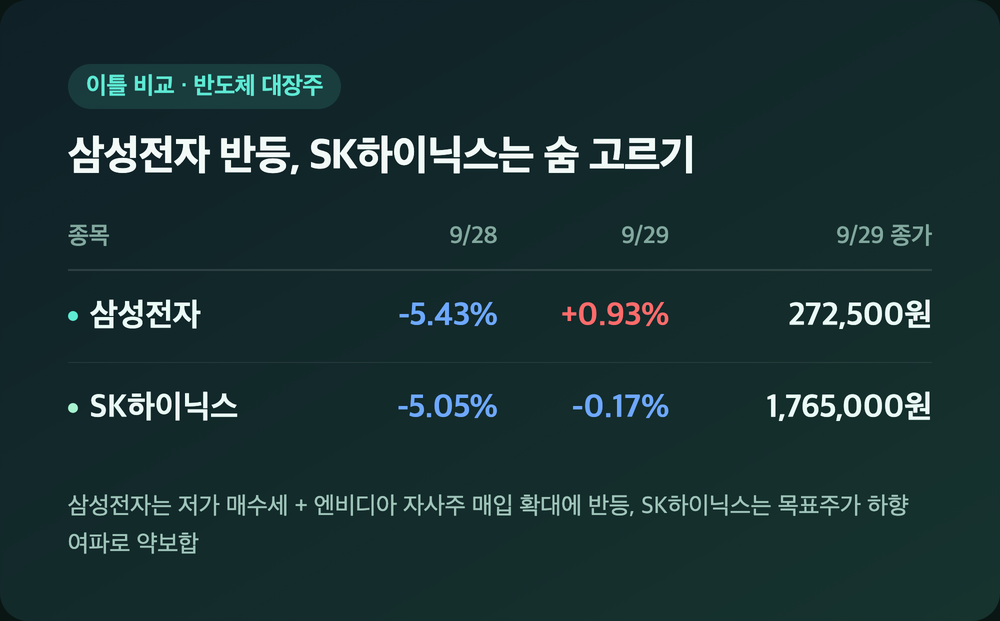
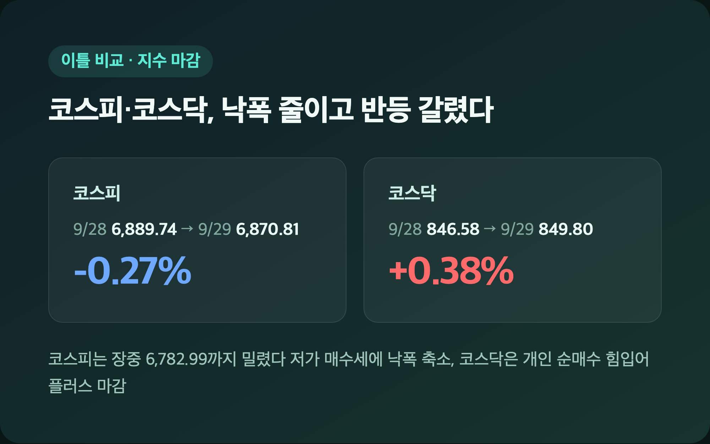
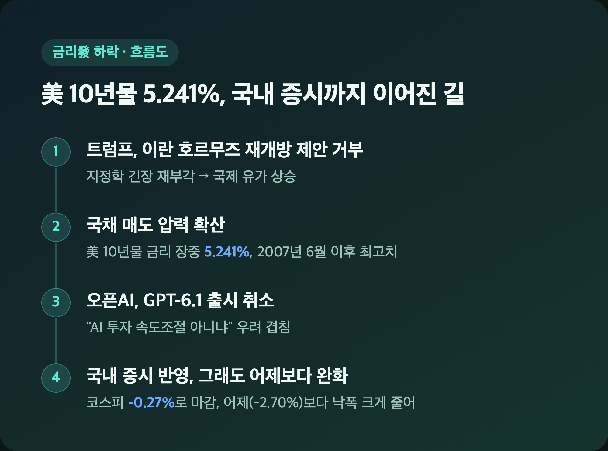
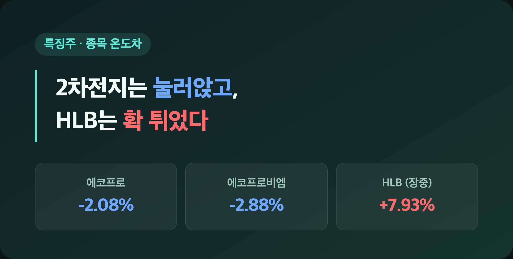

삼성전자 +0.93%. 어제 이 숫자가 -5.43%였던 거 생각하면, 오늘 이 정도만 봐도 마음이 놓이더라고요. "역시 하루 만에 다 무너지는 건 아니었구나" 싶었던 9/29 국장, 코스피부터 차근차근 정리해볼게요.
💾 삼성전자 +0.93% · SK하이닉스 -0.17% – 어제 5%대 급락 딛고 숨 돌렸다
|
삼성전자 272,500원 (+0.93%) / SK하이닉스 1,765,000원 (-0.17%) |

| 종목 | 9/28 등락률 | 9/29 등락률 | 9/29 종가 | 9/29 거래대금 |
|---|---|---|---|---|
| 삼성전자 | -5.43% | +0.93% | 272,500원 | 약 4조 600억원 |
| SK하이닉스 | -5.05% | -0.17% | 1,765,000원 | 약 4조 9,985억원 |
25주 들고 있는 삼성전자가 어제 -5.43% 맞았을 때는 "이거 또 물렸네" 하고 넘겼는데, 오늘 반등 소식 보고는 진짜 오랜만에 안도했습니다. 반등 재료로는 저가 매수세 외에 엔비디아가 자사주 매입을 1,500억 달러 추가하기로 발표하며 반도체 투자심리가 풀린 게 꼽혔어요. 다만 SK하이닉스는 장 초반엔 강보합으로 출발했다가 결국 -0.17%로 밀렸는데, 원화 강세 여파로 DS투자증권이 목표주가를 310만원에서 264만원으로 14.8% 낮춘 것도 부담이었던 걸로 보여요(3분기 환율 가정을 1,430원에서 1,370원으로 내려 잡았다고 하네요). 그래도 같은 리포트에서 "4분기 고부가 제품 믹스 개선이 이제 더 중요한 변수"라는 평가도 같이 나왔다고 하니, 무조건 나쁜 얘기만은 아니었습니다.
🇰🇷 코스피 -0.27% · 코스닥 +0.38% – 어제 -2.70% 급락 이후 낙폭이 확 줄었다
|
코스피 6,870.81 (-18.93, -0.27%) / 코스닥 849.80 (+3.22, +0.38%) |

| 구분 | 9/28 종가 | 9/29 종가 | 등락률 |
|---|---|---|---|
| 코스피 | 6,889.74 | 6,870.81 | -0.27% |
| 코스닥 | 846.58 | 849.80 | +0.38% |
장중 한때 6,782.99까지 밀리며 저점을 찍었는데, 오후 들어 저가 매수세가 들어오면서 낙폭을 줄였어요. 장중 변동폭만 115포인트가 넘었다고 하니 그 안에서도 꽤 출렁였던 셈이죠. 다만 상승 종목이 232개, 하락 종목이 624개로 하락이 압도적으로 많았다는 점, 그리고 이틀 연속 6,800선대에 갇힌 흐름이라는 점은 그대로예요 — 한 매체는 이걸 "연이틀 금리 찬물"이라고 표현했더라고요. 거래대금은 코스피 기준 17조 9,931억원으로 집계됐습니다.
📊 왜 낙폭이 컸나 – 美 금리 5.241%·유가·AI 투자 속도조절 우려
|
美 10년물 국채금리 장중 5.241% (2007년 6월 이후 최고) |

| 이슈 | 내용 |
|---|---|
| 美 10년물 금리 | 장중 5.241%, 2007년 6월 이후 최고치 |
| 트럼프 대통령 발언 | 이란의 호르무즈 해협 재개방 제안 거부 → 유가 상승 |
| 연준 인사 발언 | "인플레이션 압력이 수개월간 지속될 수 있다" |
| AI 관련 소식 | 오픈AI GPT-6.1 출시 취소 → AI 투자 속도조절 우려 |
간밤 미국 10년물 국채금리가 또 한번 치솟은 게 오늘 국장이 무거웠던 가장 큰 배경이었어요. 트럼프 대통령이 이란 측 제안을 거부하면서 유가가 오르고, 그게 국채 매도(금리 상승)를 자극했다는 분석이 나왔습니다. 여기에 오픈AI가 GPT-6.1 출시를 취소했다는 소식까지 겹치면서 "AI 투자 속도가 조절되는 거 아니냐"는 우려도 기술주·반도체 투자심리를 눌렀고요. 어제는 이 재료로 코스피가 -2.70%까지 빠졌는데 오늘은 -0.27%로 그쳤으니, "같은 걱정거리인데 반응은 훨씬 차분해졌네" 싶었습니다. 참고로 원/달러 환율은 오후 3시 30분 기준 8.4원 내린 1,356.7원으로(일부 매체는 1,357원 60전으로 집계해 소폭 차이가 있는데, 1,356~1,358원대에서 하락 마감했다는 방향성은 같아요) 원화가 오히려 강세를 보였습니다.
💰 수급 동향 – 외국인 2.9조 던졌는데 개인·기관이 막아냈다
|
코스피: 외국인 -2조 9,000억원대 / 개인 +1조 1,432억원대 / 기관 +1,206억원대 |
| 투자자 | 코스피 순매매 | 코스닥 순매매 |
|---|---|---|
| 외국인 | -2조 9,030억~2조 9,046억원 | -1,291억~1,294억원 |
| 개인 | +1조 1,432억~1,450억원 | +1,483억~1,486억원 |
| 기관 | +1,206억~1,211억원 | -53억~54억원 |
외국인이 코스피에서만 2조 9,000억원대를 팔아치우며 지수 하락을 주도했는데, 개인과 기관이 각각 1조원대·1,200억원대를 받아내면서 낙폭을 상당 부분 방어했어요(매체별로 2조 9,030억원·2조 9,046억원 등 소폭 차이가 있는데 "2조 9,000억원대"로 대동소이합니다). 재밌는 건 코스닥은 정반대였다는 점 — 개인이 1,483억원 넘게 순매수하며 지수를 끌어올렸고 외국인·기관은 오히려 팔았습니다. 저는 이 대목 보면서 "오늘은 외국인이 코스피는 팔고 코스닥은 더 세게 팔았구나" 싶었는데, 다행히 두 시장 다 개인이 방파제 역할을 해준 하루였네요.
🔋 2차전지는 계속 약세, 바이오는 HLB가 확 튀었다
|
에코프로 -2.08% / 에코프로비엠 -2.88% (장 초반 기준) / HLB 장중 +7.93% |

| 종목 | 등락률 |
|---|---|
| 에코프로 | -2.08% |
| 에코프로비엠 | -2.88% |
| HLB | 장중 +7.93% |
| 글로벌테크놀로지(신규상장) | +168.5% (공모가 대비) |
2차전지 대표주는 오늘도 약세를 이어가며 코스닥 지수 상단을 눌렀어요. 업종 전체로 봐도 건설(-4.95%), 금속(-2.98%), 화학(-2.68%)이 유독 부진했고, 반대로 의료정밀기기(+2.21%), 전자장비와기기(+2.14%), 반도체와반도체장비(+0.63%) 쪽은 선방했습니다. 그 와중에 눈에 띈 게 HLB인데, 장중 +7.93%까지 오르며 바이오 업종 전반에 훈풍을 불어넣었더라고요. 신규 상장한 LED 구동 IC 반도체 기업 글로벌테크놀로지도 공모가(1만원) 대비 168.5% 급등한 2만 6,850원에 거래되며 코스닥 쪽 관심을 끌었는데(일반청약 경쟁률 57.15대 1), 2차전지가 눌러앉는 와중에도 이런 종목은 따로 노는 걸 보면 역시 국장은 지수 하나로만 설명이 안 되는구나 싶습니다.
🔮 다음 변수 – 9/30 PCE·마이크론 실적, 10/2 고용지표
|
9/30 밤(한국시간) 美 8월 PCE 물가지수 / 마이크론 FY4분기 실적 / 10/2 美 9월 고용지표 |
| 일정 | 이벤트 |
|---|---|
| 9/30 밤(한국시간) | 美 8월 개인소비지출(PCE) 물가지수 발표 |
| 9/30(현지)~10/1 새벽(한국시간) | 마이크론테크놀로지 FY4분기 실적 발표 |
| 10/2 | 美 9월 비농업 고용지표 발표 |
KB증권은 이 지표들을 소화하며 시장이 안정화되는지 확인할 시점이라고 짚었어요. 마이크론 실적은 반도체 업황 가늠자로 특히 주목받고 있고요. 10월 코스피 밴드로는 대신증권이 6,500~7,200선, 키움증권은 이번 주 기준 6,800~7,250선을 제시했습니다 — 두 증권사 다 국채금리 상승을 부담 요인으로 꼽으면서도 반도체 실적 개선 가능성엔 기대를 걸고 있더라고요.
마무리하며
오늘 코스피는 -0.27%(6,870.81)로 어제(-2.70%)보다 낙폭을 크게 줄였고, 제가 물려있는 삼성전자는 -5.43%에서 +0.93%로 하루 만에 반등했어요. 외국인이 2조 9,000억원대를 팔았는데도 개인·기관이 막아낸 하루였고요.
솔직히 삼성전자 반등 하나로 오늘 기분이 이렇게 좌우될 일인가 싶으면서도, 25주 들고 있으면 어쩔 수 없더라고요. 일단 PCE 물가지수랑 마이크론 실적 나올 때까지는 숫자 하나하나에 일희일비하지 않으려고요.
오늘은 오랜만에 손절보다 안도가 더 컸던 하루였습니다. 이 흐름 며칠만 더 가줬으면 좋겠네요 🌱